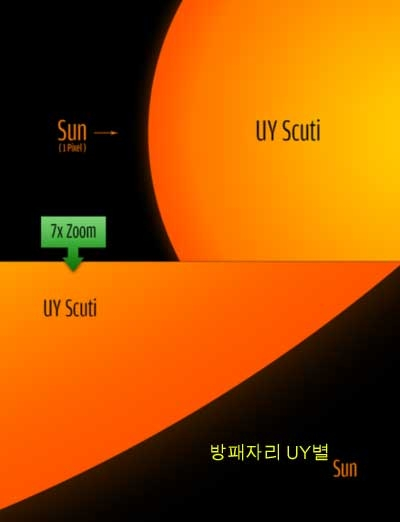
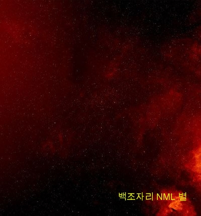
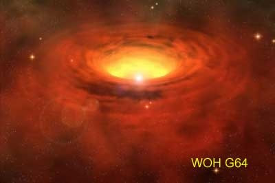
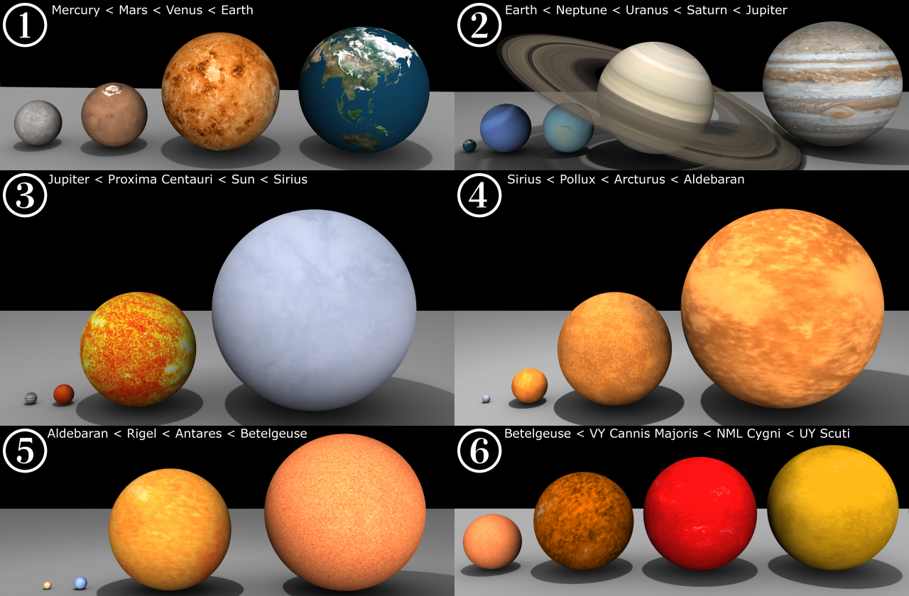

1. 방패자리 UY별/ UY Scuti (태양의1,708배)

방패자리 UY 별은 적색 초성성이거나 극대거성으로 방패자리의 변광성이다. 이제껏 알려진 별 중에서 가장 큰 별로, 태양 반지름의 1,708배에 달한다. 지름은 24억km(16AU)이고, 부피는 태양의 50억 배다. 지구에서 가장 가까운 극대거성의 하나로 거리는 약 9,500광년이다. 만약 태양 자리에다 갖다놓는다면 그 광구는 목성 궤도를 삼키고 거의 토성에까지 육박하는 크기다.
2. 백조자리 NML 별/ NML Cygni (1,650배)

백조자리 NML 별은 특이하게도 성운으로 둘러싸여 있는 극대거성이다. 크기는 태양의 1,650배, 15.3AU, 2,295,000,000km에 이른다. 태양 자리에다 놓는다면 항성 표면이 목성 궤도를 넘어 토성 궤도 중간까지 육박할 것이다. 부피는 태양의 45억 배에 달한다.
3. WOH G64 (1,540배)

WOH G64는 우리 은하의 동반 은하인 대마젤란 성운에서 발견된 항성들 중 가장 큰 별로, 황새치자리 방향으로 지구에서 약 16만 3천 광년 떨어진 곳에 있다. 크기는 태양반경의 1,540배로 만약 태양 자리에 끌어다놓는다면 항성 표면은 토성 궤도까지 미칠 것이다. 이 별의 주위에는 반지름이 최소 120AU(천문단위)~ 최대 30,000AU에 이르는 도넛 모양의 두터운 가스 물질이 둘러싸고 있는데, 물질의 총질량은 태양의 3~9배에 이른다.
아래는 반지름이 작은 순서대로 정렬한 그림이다. 반지름 순위에서 상위권을 차지하는 별들은 극대거성이나 적색초거성이다. 이들은 관측방법에 따라 측정값이 달라지기도 한다.
아래 목록 중 상위를 차지하는 별들의 반지름은 막대하게 크기 때문에, 만약 이 별들을 우리 태양 대신 태양계 중앙에 놓는다고 가정하면, 그 표면이 보통 목성 궤도를 전후하여 미치는 경우가 많다. 그러나 이들은 덩치와 비교하면 밀도는 매우 희박하다.

천체들의 크기를 보여주는 그림 1. 수성 < 화성 < 금성 < 지구
2. 지구 < 해왕성 < 천왕성 < 토성 < 목성
3. 목성 < 프록시마 센타우리 < 태양 < 시리우스
4. 시리우스 < 폴룩스 < 아크투르스 < 알데바란
5. 알데바란 < 리겔 < 안타레스 < 베텔게우스
6. 베텔게우스 < 큰개자리 VY < 백조자리 NML < 방패자리 UY